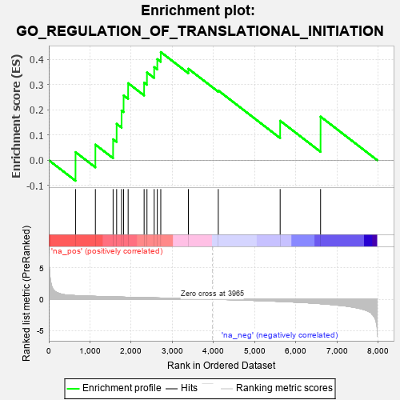
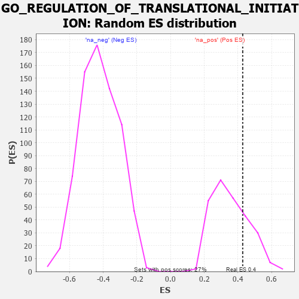

| | | Dataset | 7d |
| Phenotype | NoPhenotypeAvailable |
| Upregulated in class | na_pos |
| GeneSet | GO_REGULATION_OF_TRANSLATIONAL_INITIATION |
| Enrichment Score (ES) | 0.42858508 |
| Normalized Enrichment Score (NES) | 1.2000483 |
| Nominal p-value | 0.26217228 |
| FDR q-value | 0.48115936 |
| FWER p-Value | 1.0 |
Table: GSEA Results Summary

Fig 1: Enrichment plot: GO_REGULATION_OF_TRANSLATIONAL_INITIATION
Profile of the Running ES Score & Positions of GeneSet Members on the Rank Ordered List
| PROBE | GENE SYMBOL | GENE_TITLE | RANK IN GENE LIST | RANK METRIC SCORE | RUNNING ES | CORE ENRICHMENT | | 1 | RBM4 | | | 649 | 0.576 | 0.0320 | Yes |
| 2 | NCK2 | | | 1131 | 0.458 | 0.0617 | Yes |
| 3 | BOLL | | | 1561 | 0.381 | 0.0829 | Yes |
| 4 | RXRA | | | 1647 | 0.365 | 0.1442 | Yes |
| 5 | AGO2 | | | 1767 | 0.343 | 0.1967 | Yes |
| 6 | FMR1 | | | 1816 | 0.334 | 0.2565 | Yes |
| 7 | EIF3B | | | 1926 | 0.317 | 0.3053 | Yes |
| 8 | EIF3K | | | 2314 | 0.258 | 0.3075 | Yes |
| 9 | NCBP2 | | | 2383 | 0.248 | 0.3478 | Yes |
| 10 | EIF3H | | | 2558 | 0.219 | 0.3689 | Yes |
| 11 | EIF3E | | | 2634 | 0.207 | 0.4004 | Yes |
| 12 | DDX1 | | | 2718 | 0.196 | 0.4286 | Yes |
| 13 | DDX3X | | | 3388 | 0.091 | 0.3624 | No |
| 14 | MTOR | | | 4114 | -0.025 | 0.2761 | No |
| 15 | LARP1 | | | 5616 | -0.349 | 0.1563 | No |
| 16 | TPR | | | 6597 | -0.709 | 0.1727 | No |
Table: GSEA details [plain text format]

Fig 2: GO_REGULATION_OF_TRANSLATIONAL_INITIATION: Random ES distribution
Gene set null distribution of ES for GO_REGULATION_OF_TRANSLATIONAL_INITIATION